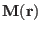
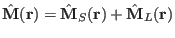
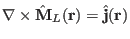
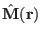
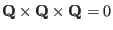
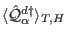
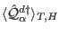

Next: External module functions dmq1 Up: Module Functions for Observables Previous: External module function dS1 Contents Index
”going beyond” dipolar approximation is a desirable feature of an accurate calculation of magnetic neutron scattering intensity and can be performed using mcphase. The internal module so1ion does this in an excellent way for the ground state multiplet of rare earth atoms (see section 8.5) using equations (49) for the scattering operator . A more general formula for this scattering operator operator relates this operator to the Fourier transform of the magnetisation density of the unfilled shell of a specific ion [29]:
Note that the magnetisation density consists of two contributions , the spin and orbital contribution. The orbital contribution is not uniquely defined due to a gauge freedom ( , the curl of the magnetisation must give the current density, so any gradient of a potential may be added to  without changing the result). However, this does not matter, because adding a gradient of a potential to will just give a contribution  to the equation (110), thus the neutron scattering cross section is not sensitive to the chosen gauge, which is an important feature of the theory.
Technically, ”going beyond” dipolar approximation in the program mcdiff
can be done with module functions mq and estates.
The output of mq is the Fourier transform of the magnetization
density in units of  , which is equivalent to two times the scattering operator
 for
a given orientation of the scattering vector. mq is called many times, for
every scattering vector. In order to
do an efficient calculation the eigenstates should be calculated only
once, this is the task of function estates.
, which is equivalent to two times the scattering operator
 for
a given orientation of the scattering vector. mq is called many times, for
every scattering vector. In order to
do an efficient calculation the eigenstates should be calculated only
once, this is the task of function estates.
The format to be used is:
extern "C" void mqcalc(ComplexVector & mq,double & th,double & ph,double J0, double & J2, double & J4, double & J6,ComplexMatrix & est)
The meaning of the symbols is as follows:
on input
th polar angle theta of the scattering vector Q (angle with the axb axis=c axis) in rad
ph polar angle phi of the scattering vector Q (angle with bx(axb)=a in the
projection into the bx(axb),b plane = angle with a in the projection into the
ab plane) in rad
J0,J2,J4,J6 form factor functions <jn(Q)>
est eigenstate matrix (as calculated by estates),
it should also contain population numbers of the states
on output
mq(1..3) Kartesian components of the scattering operator mq=<M(Q)>/muB=-2<Q>_TH
Note that:
mq(1)=<Mbx(axb)(Q)>/muB
mq(2)=<Mb(Q)>/muB
mq(3)=<Maxb(Q)>/muB
according to Lovesey Neutron Scattering equation 6.87b the
scattering operator is given in spherical coordinates
Q-1,Q0,Q+1 (introduced as described above on input of th and ph)
these are related to cartesion coordinates by 11.123
thus at Q=0 <M(Q)>=2<S>+<L>